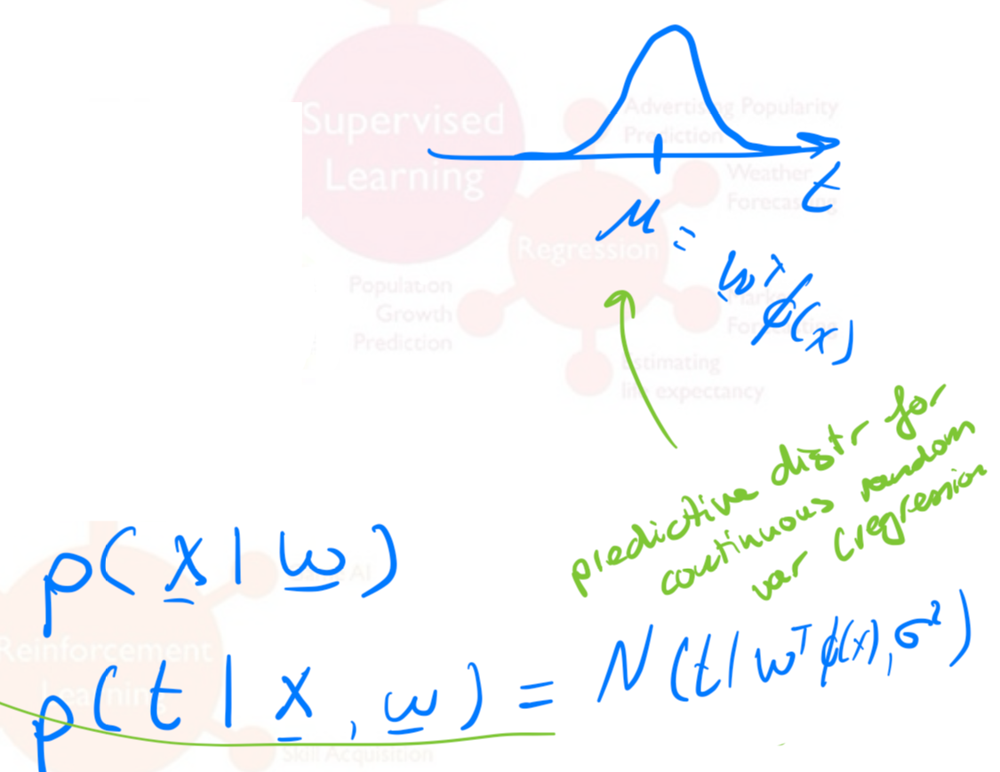
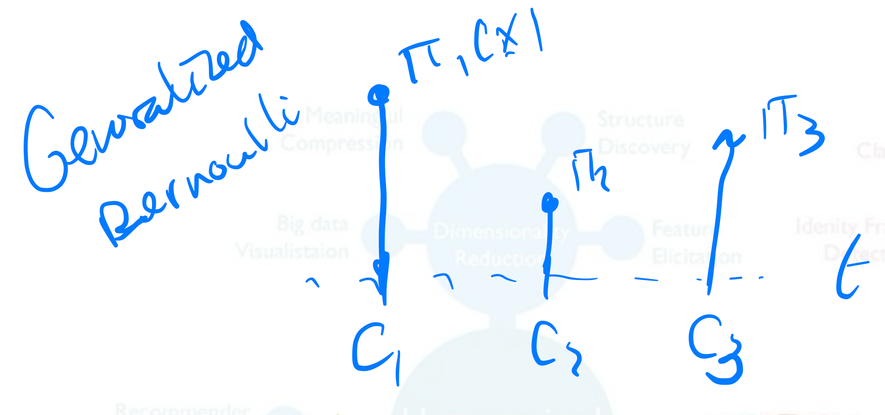
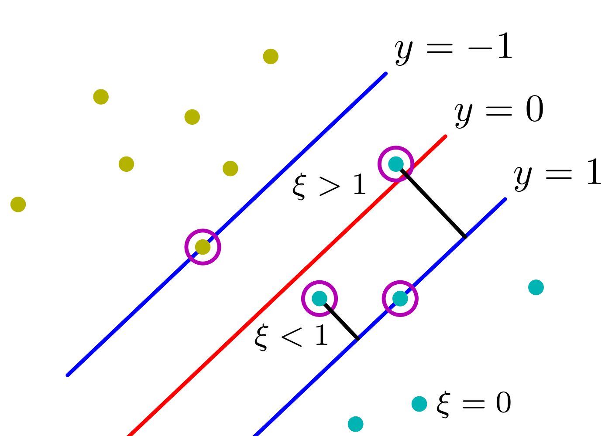
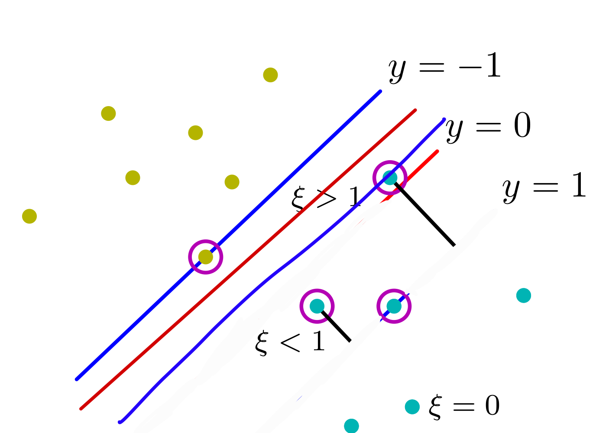

1 Kernel Methods
In Unsupervised Learning we assume a latent target. In supervised we have a target variable in Unsupervised we assume there is some relation between a latent variable \(z\) and our datapoints.
Supervised Learning:
Regression: is continuous, the target \(\in \mathbb{R}\)
- Probabilistic modelling:
- In regression we want to have a continuous target variable
- Find model parameters via ML, MAP (or use fully Bayesian)
- If we want to avoid overfilling we include a prior

- In regression we want to have a continuous target variable
- Probabilistic modelling:
Classification: is discrete, the target \(\in \{C1,...C_k\}\) finite set of options
- Probabilistic modelling:
- We also predict distributions. Here we want to predict a probability per each class ie. generalized bernoulli distribution
- Find model parameters via ML, MAP (or use fully Bayesian)
- If we want to avoid overfilling we include a prior

- Probabilistic modelling:
Unsupervised Learning:
- Clustering: is discrete. Here there is some latent classes \(z\)
- Here we can think of unsupervised classification i.e. K-Means Clustering
- Dimensionality Reduction: is continuous. PCA assumes a continuous latent variable
- Here we think about an unsupervised regression
Probabilistic methods:
- Define (predictive) distributions
- Find model parameters via ML, MAP (or use fully Bayesian)
Discriminative methods:
- Here we no think about probabilities we just want to make decisions
- It is more algorithmic in nature
Similarities between methods:
Discriminative methods (left) & Probabilistic methods (Right)
- Least Square Regression <-> MLE Gaussian predictive distribution
- Ridge Regression <-> MAP
- K-Means (hard assignment) <-> Gaussian Mixture Models (soft assigment dot point of color green but also red bluish)
New: we will add parametric and non-parametric models
Parametric models:
- Linear models \(y(x)=Wx+b\)
- Generalized Linear models \(y(x)=\sigma(Wx+b)\)
- NNs i.e our weights W and bias b
- Distribution classes (Gaussian, Bernoulli,..) i.e parametrized by mean, cov, etc
- Basis functions (this is like a hyperparameter)
Non-parametric models:
- Kernel methods: does not have parameters but still does predictions
- SVM
Tool in Machine learning is optimization
Optimization:
- Convex (one solution: we can solve it analytically) vs non-convex (we used numerical aka brute force solutions like SGD)
- Find stationary points (solve derivative =0)
- Analytic solutions vs numerical (SGD)
- Method of Lagrange multipliers (used because sometimes our optimization needs to obey some constraint)
- Equality constraint optimization
- Inequality constraint optimization
2 So Far: Parametric Models
- We teak the parameters highlighted in green color
3 Parametric vs Non-Parametric Models
- In parametric you train then discard data and use weights W or other parameters, in Non-parametric you do predictions but you always carry the data to kae such predictions.
- Because carrying big data is not efficient then you may use SVM
- Here we define infinitely number of functions spaces \(M=\infty\)
This means we have a continuos representation of our space. We can sample as finely as we want, so we can discretized and the index would be one function, because \(M=\infty\) then we adjust this index to the sampling rate to make it more or less smother
4 Non-Parametric Kernel Methods
Ridge regression can be defined in kernelize form without using explicit using basis functions.
- Primal for the parametric case
- Dual for the non-parametric representation of the model
For linear models:
- The kernel it just computing the similarity between \(x\) and \(x'\)
5 Kernelized Ridge Regression
6 Primal vs Dual/Kernel Approach
7 Kernel Trick/Kernel Substitution
The kernel trick its like calculating similarities with the input datapoint, the prediction would be heavily influenced based on point pairs that are similar
The kernel trick is whenever I see the form \(\textbf{x}_n^T \textbf{x}_n\) (instead of using basis functions) we will replace it with the kernel
\[ \begin{align} \textbf{k}(\textbf{x}_n^T, \textbf{x}_m) = \textbf{K}_{nm} \end{align} \]
We do not know what kernel will be but we can prove that if the kernel is symetric positive semi definite that there are always corresponding basis function \(\mathbb{\phi}(\textbf{x}_n)^T\mathbb{\phi}(\textbf{x}_n)\)
So basically we find \(\mathbb{\phi}(\textbf{x}_n)^T\mathbb{\phi}(\textbf{x}_n) = \textbf{k}(\textbf{x}_n^T, \textbf{x}_m) = \textbf{K}_{nm}\)
If a choice any basis function it induces a kernel simply by computing inner product in the new feature space
8 Deriving the corresponding feature vector
For every positive definite kernel there exist a set of basis from \(R^d\) to \(R^M\). Meaning there would be a set of basis which means instead of solving for the basis we can just get a valid kernel and not learn the basis
- This is important because now I do not need to limit myself to find a a dimensional feature descriptors i.e basis in \(R^d\) (i.e basis like polynomials basis, or gaussians basis) now I can have a valid kernel that can basically be infinitely in basis functions \(M = \infty\)
Sidenote: there is more chance to overfilling
8.1 Note on infinite dimensional feature space of Gaussian kernels
9 Kernel Trick/ Kernel substitution
10 Example: polynomial kernel
This shows that if we have this polynomial kernel then that we can decompose it into \(\mathbb{\phi}(\textbf{x}_n)^T\mathbb{\phi}(\textbf{x}_n)\)
Where: \(\mathbb{\phi}(\textbf{x}) \in \mathbb{R}^{6}\)
11 Examples of valid Kernels
- The Gaussian kernel produces infinitely \(M = \infty\) many basis functions
12 Support vector machines
SVM are kernel methods but with sparse solutions. MEaning some \(a_n = 0\) so that we do not compute all datapoints but only relevant. The ones that are relevant are called suport vectors
- We are guaranteed to find a solution because it is a Convex optimization problem
13 Linearly Separable dataset
- One way to tell whether a classifier is better than other is to look at how far us the margin from a closes point to the decision boundary. If the margin is large then I have a stable classifier.
Goal: we want to maximize the margin to have a stable classifier. To classify the size of the margin we can use some linear projections to the boundary we see this in the next topic
The graph above is taking into account that we classify the data correctly in two parts so the blue points in one side the red in another.
14 Maximum Margin Classifier
Now that we have a expression for the margin our objective is to maximize this margin
- In this case we have \(r_n\) so we could tune \(w\) to obtain the maximum margin to a point. How do we do this? we follow:
- Identify the closest point. The \(\kappa\) (kappa) its introduced to say we can amplify our distance we can i.e have the distance in kiloliters or miles etc.
- To resolve the ambiguity of measuring in kilometers or in miles or so for, we set our \(||\kappa \textbf{w}|| = 1\). This is essentially setting the unit which you want to compute the distance. You are saying then the closest point should have unit 1 this is a constraint
- From this step it follows that all the points would be my prediction times label \(t_n \, y_n\) will be greater or equal to \(1\)
- We maximize the size of the margin given by 1/|W| with the inequality constraint
- Maximize \(\frac{1}{\textbf{w}}\) means minimize \(\frac{1}{2}||\textbf{w}||^2\)
- We have \(N\) constraints because we need to go over each datapoint
- It is a convex quadratic optimization problem with a quadratic loss and linear constraint. We solve this by Lagrange Multipliers
15 Constrained optimization (inequality constraint)
- Now the solution should lie within the yellow region
There is two cases: 1. The objective could lie inside the yellow region. Then I am doing maximization without any constriant 2. If the solution lies outside then the solution would lie on the perpendicular to the yellow boundary. See point \(x_A\) where there is an arrow pointing to \(x\) (the optimum solution)
Before
- We solve the lagrange multiplier, derive with respect to parameter ie. \(w\) then derive wrt to \(\lambda\) and then replace this solution into \(w\).
Now (we need additional requirements):
- Define Primal Lagrangian function: \(L = f(x) - constraint\)
- Compute the dual lagrangian
- With solvers solve the dual problem
- Sidenote: dual optimizer (is convex) gives you optimal solutions, it is a way of convexifiyng a problem
You need to think that the dual gives you an upper bound, and you are lowering this by setting \(\mu\) as much as possible
16 SVM: Maximum Margin Classifier
- For a maximization problem we \(+\) (sum) our constraint
- For a minimization problem we \(-\) (subtract) our constraint
Then you approach the limit from below
16.1 Calculating the Lagrange
- Goal: we want to obtain optimal values for \(\textbf{w}^*\) and \(b^*\)
- Write down:
- Primal Lagrange function: \(L = f(x) - constraints\)
- Write the KKT conditions
- Derive the Dual Lagrangian by setting \(\frac{\partial L}{\partial \textbf{w}}=0\), \(\frac{\partial L}{\partial b}=0\)
- Let the machine compute what is the argmax \(a\) so that we obtain our parameters \(\textbf{w}^*\) and \(b^*\)
- For the case of SVM we start by step 1.
We write the primal Lagrange with the constriant. Also, we introduce the dual variables (lagrange multipliers) \(\textbf{a}_n\) meaning for every each datapoint we want it to lie in the proper side of the boundary. This condition that \(\textbf{a}_n\) imposes comes from the KKT conditions
- We solve for \(\frac{\partial L}{\partial \textbf{w}}=0\), \(\frac{\partial L}{\partial b}=0\) and rewrite the Primal to the Dual Lagrangian
Remember Dual Lagrangian would be convex so we know there would be unique solution
Now that we have derived the dual we can now apply the kernel trick as follows:
17 Sparse solutions due to KKT
Due to kernel trick we now would have used all the datapoints in our dataset but this is no longer the case because of our complimentary slackness which says that points liying on \(y=1\) or \(y=-1\) or better said when this \(t_ny(\textbf{x}_n)\) is true then their lagrange multipliers: \(a_n\) would be zero.
Which means we would a couple of datapoints instead of the whole batch \(x_n\). These selected points are called the support vectors
18 SVM: Solution for bias b
So far we have solve \(y(\textbf{x})\) but we still have \(\textbf{b}\). So now we solve for this latter variable:
Recall we have the constraint that we derive deriving the primal wrt to \(b\):
That means I can pick whathever \(\textbf{b}\) I want as long the KKT constraints are satisfied
No we use the final constraint that \(t_ny_n(x)=1\)
- In practice when we found a solution for b its better to average them
19 Maximum Margin Classifier: Contours
If we use a gaussian kernel then our Maximal Margin Classifier we will always be able to classify the points i.e we may end up with an island to classify only one point.
The reason why the contours are smooth is because of the sigma parameter from the gaussian. The small the sigma the more wably (unpredictable), the larger the smoother.
Note on the sigma value: sigma very small then the similarity decays. That means the the decision boundaries would be very curvy aka irregular decision boundary. If I make sigma very large then the countours become smoother
20 Note on outliers
Due to the capability of the Maximum Margin Classifier all outliers would be calssified well which sometimes may not be desirable, to avoid this irregular boundaries we introduce slackness variables. This notion leads to SVM with Soft Margins
21 Soft Margin Classifiers
- We do not move the decision boundary, we allow outliers but we add a penalty to them
- Penalty is proportional to the boundary
So now because we introduce this slack variable we have a new constraint optimization problem.
22 Maximum Margin Classifiers: Soft Margins
The \(C\) variable would be the one that decides which points get penalize. That is, \(C\) prevents that every point get a slack and, our goal now is to avoid as many points to be in the wrong side of the decision boundaries.
Thus we are now minimizing three parameters: \(\textbf{w}\), \(\textbf{b}\) and \(\xi_n\), where the slack variable should always be positive variable. This induces the following constraints
Solving steps 1 -> 2:
- Primal variables: \(\textbf{w}\), \(\textbf{b}\) and \(\xi_n\)
- Dual variables: \(a_n\) and \(\mu_n\)
Solving steps 3 -> 4:
- Solving the derivatives for the primal variables \(\textbf{w}\), \(\textbf{b}\) and \(\xi_n\)
Solving mid-step: Box constraints:
- The box constraint comes from the green highlighted equations
23 Wrapping up: Maximum Classifiers w/ Soft Margins
- If there is no constraint \(C -> 0\): then you allow every point in the boundary to have slack because there is essentially no penalty. That means:
- You are more flexible to outliers
- Your margin becomes infinitely wide
- Every datapoint becomes a support vector
- There is no sparcity to the kernel matrix, because all the points would be a support vector
- If my \(C -> \infty\) then I do not allow slack so that means I am very strick because I am penalizing very hugely to my slack that means I will not allow points that corss the margin. Which brings you to the case of hard margin
- This means if I have an outlier I will have an smaller decision boundary because that outlier will be considered as a support vector, therefore it will lower the margin size which means I will have an unstable model when a random datapoint appears
Before & After

- This means if I have an outlier I will have an smaller decision boundary because that outlier will be considered as a support vector, therefore it will lower the margin size which means I will have an unstable model when a random datapoint appears
24 Clarification of problems
Convex optimization problems
Linear Regression
Linear regression with L2 regularization (ridge regression) and L1 regularization (lasso regression) are convex optimization problems. Ridge regression minimizes the sum of squared errors plus the L2 norm of the coefficients, while lasso minimizes the sum of squared errors plus the L1 norm of the coefficientsLogistic Regression with L1 or L2 Regularization
Similar to linear regression, logistic regression can incorporate L1 or L2 regularization terms, making it a convex optimization problemSVM
We can use the Dual Lagrangian together with the kernel trick so that we find a convex solution. The dual isolates the \(a_n\) and also \(x_n x_n^T\) so then in the end we use the kernel trick and because we can express it with gaussian which where infinitely then we know we will find a solution
Quadratic Discriminant Analysis (QDA)
QDA is a supervised learning algorithm with a quadratic decision boundary and can be formulated as a convex optimization problemPerceptron
Non-Convex optimization problems: